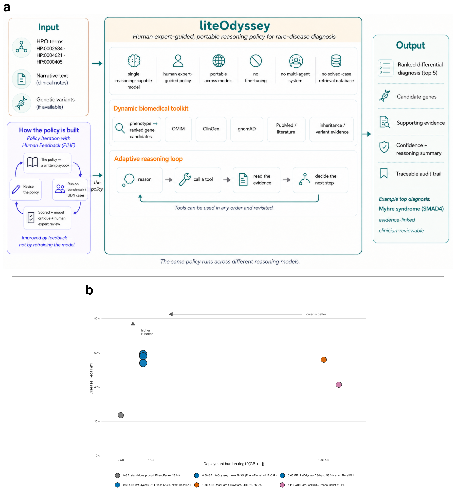

Expert rare-disease reasoning, written as an auditable policy that guides unmodified LLMs — no fine-tuning, no GPU cluster, no solved-case database.
We investigated whether rare-disease diagnostic reasoning can be externalized as a portable policy for general-purpose LLMs — without changing model weights or requiring heavy infrastructure. Through Policy Iteration with Human Feedback (PIHF), clinicians review the model’s reasoning and revise the written policy. On 1,243 public cases and 515 Undiagnosed Diseases Network patients, the policy improved ranked differentials over matched LLM baselines, with blinded physician review corroborating the UDN gain.

Drop a sanitized .cast into recordings/public/. This prototype will render it with the bundled asciinema player.
A reasoning LLM executing the liteOdyssey policy on a real case with public biomedical tools (~4 min).
The optimized object is not a new model — it is a clinician-readable, model-executable diagnostic policy.
Policy Iteration with Human Feedback. Clinicians review the model’s reasoning, name recurrent errors, and revise the written policy — without retraining weights.
Deterministic CLI tools query free sources — phenotype, gene–disease, inheritance, literature — with provenance the policy can cite and audit.
Each case returns a ranked differential plus a clinical audit trail: features considered, hypotheses tested, evidence for and against, and confidence.
Matched parametric baselines use the same language model and clinical features without the liteOdyssey policy or tools. Numbers below are disease Recall@1 unless noted.
370 cases · R@5 73.2% vs 51.4%
Mapped + unmapped + extension · R@5 78.0% vs 32.9%
515 patients · 15 U.S. sites · R@5 31.8% vs 25.6%
On LIRICAL, liteOdyssey (58.6% R@1) exceeds published SOTA performance for reasoning-based systems without a solved-case database (39.5% without retrieval; 51.6–56.0% with retrieval from tens of thousands of solved cases). Ablations under exact-OMIM scoring show the full policy-and-tools system above prompt-only and tools-without-policy configurations.